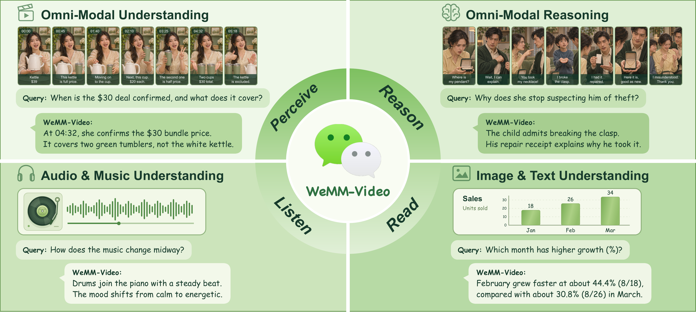
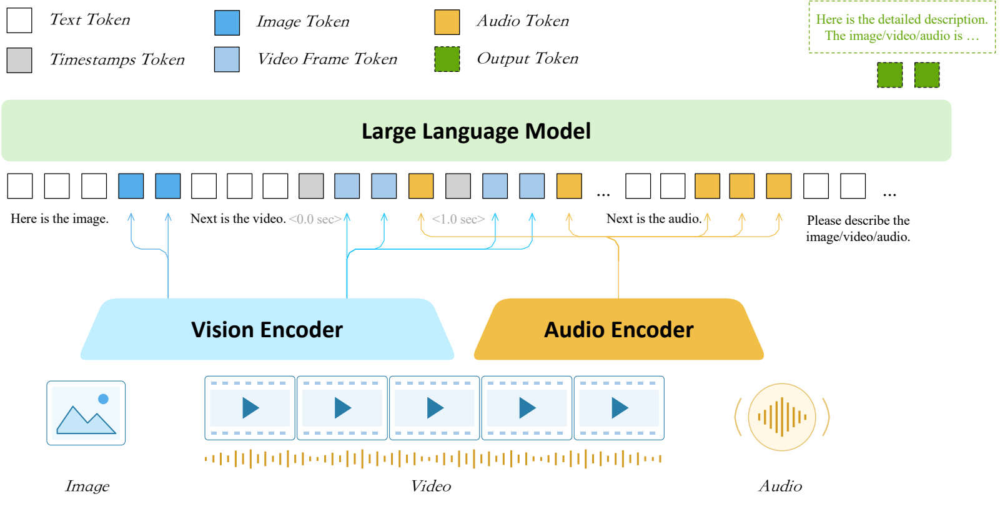

WeMM-Video-9B
Overview
WeMM-Video-9B is the dense 9B checkpoint in the WeMM-Video family. WeMM-Video is a Chinese–English bilingual family for joint audio-visual understanding and reasoning. It accepts text, images, audio, and video and generates text responses.
- Weights · BF16 Safetensors · 19.54 GiB of weight files
- Quantized variants · FP8 Block128 · AWQ W4A16 · GGUF Q4_K_M · NVFP4 W4A16
Capabilities
WeMM-Video can combine video frames with the original soundtrack to describe events, transcribe speech, and reason about what is seen and heard. It also accepts silent video, standalone audio, images, and text, with responses in Chinese or English.

Architecture and training
Vision and audio encoders turn media into tokens that the language model processes alongside text. Video frames carry timestamps. The family was pretrained on approximately 1.2 trillion multimodal tokens, then post-trained with multi-teacher OPD, anti-repetition MrDPO, and specialist reinforcement learning.

See the project overview for family details.
Quick Start
Set up the Transformers environment. From the WeMM-Video repository root, run the example on an MP4 with a soundtrack. The script loads the model and processor from the Hub and processes both the frames and the original audio track.
bashpython examples/transformers_video.py --model tencent/WeMM-Video-9B \ --video ./clip.mp4 --prompt "Describe what happens and summarize what you hear."
Use --revision to pin the model and processor to a Hub commit. Size GPU memory for the full weight files, media inputs, and generation cache.
Input examples in Python
Run from the project root to use the bundled media. Each call sends one request. For video, video processes frames alone and video_audio includes the original soundtrack. Both take the file path in the video field.
pythonimport torch from transformers import AutoModelForImageTextToText, AutoProcessor model_id = "tencent/WeMM-Video-9B" processor = AutoProcessor.from_pretrained(model_id, trust_remote_code=True) model = AutoModelForImageTextToText.from_pretrained( model_id, trust_remote_code=True, dtype=torch.bfloat16, device_map="auto", ).eval() def ask(prompt, *media): content = [*media, {"type": "text", "text": prompt}] inputs = processor.apply_chat_template( [{"role": "user", "content": content}], tokenize=True, return_dict=True, return_tensors="pt", add_generation_prompt=True, enable_thinking=False, ).to(device=model.device, dtype=model.dtype) with torch.inference_mode(): output = model.generate(**inputs, max_new_tokens=128, do_sample=False) answer_ids = output[0, inputs.input_ids.shape[1]:] return processor.tokenizer.decode(answer_ids, skip_special_tokens=True) print(ask("A 20-minute meeting starts at 09:45. When does it end?")) print(ask("Describe the planet in this image.", { "type": "image", "image": "examples/media/apollo-11-earth.jpg", })) print(ask("Transcribe the English speech in this recording.", { "type": "audio", "audio": "examples/media/apollo-11-small-step.wav", })) clip = dict( video="examples/media/apollo-11-first-steps.mp4", fps=1.0, min_frames=4, max_frames=16, total_pixels=262144, ) print(ask("Describe what happens on screen.", {"type": "video", **clip})) print(ask("Describe the scene and summarize the speech.", {"type": "video_audio", **clip}))
Chat Modes
Instruct mode is the default. When calling processor.apply_chat_template, pass enable_thinking=False for a direct response or enable_thinking=True for a reasoning response.
Serving
Install the matching WeMM runtime patch. The serving guide lists the dependency profiles and Docker images. Choose one server below.
vLLM
Use patched vLLM 0.18.0 for the command below. The release guide also covers patched vLLM 0.31.0 for BF16. See the vLLM recipe for setup details.
bashMODEL=tencent/WeMM-Video-9B vllm serve "$MODEL" --served-model-name "$MODEL" --trust-remote-code --dtype bfloat16 \ --host 127.0.0.1 --port 8000 --max-model-len 8192 \ --no-enable-prefix-caching --mamba-ssm-cache-dtype float32 \ --limit-mm-per-prompt '{"image":4,"video":2,"audio":2}' \ --media-io-kwargs '{"video":{"fps":2,"min_frames":4,"max_frames":16,"total_pixels":262144}}'
SGLang
Use the WeMM BF16 recipe for patched SGLang 0.5.16 or 0.5.19.
bashMODEL=tencent/WeMM-Video-9B python -m sglang.launch_server --model-path "$MODEL" --served-model-name "$MODEL" --trust-remote-code \ --host 127.0.0.1 --port 8000 --dtype bfloat16 --context-length 8192 \ --attention-backend triton --linear-attn-backend triton \ --limit-mm-data-per-request '{"image":4,"video":2,"audio":2}'
Input examples for the serving API
With the server running on port 8000, use the bundled request client from the project root in a second terminal. It sends media inline to the OpenAI-compatible chat endpoint.
bashMODEL=tencent/WeMM-Video-9B python examples/chat.py text --model "$MODEL" python examples/chat.py image --model "$MODEL" python examples/chat.py audio --model "$MODEL" python examples/chat.py video --model "$MODEL" python examples/chat.py video-audio --model "$MODEL"
| Input | Request content |
|---|---|
| Text | Text string in messages[].content |
| Image | image_url with image_url.url |
| Audio | audio_url with audio_url.url |
| Video frames | video_url with video_url.use_audio set to false |
| Video with soundtrack | video_url with video_url.use_audio set to true |
Set fps and max_frames inside video_url to control sampling for a clip. Set chat_template_kwargs.enable_thinking to true for Thinking mode. See the complete video request.
Validation
Patched vLLM loaded the checkpoint on H20 and completed generation checks for text, image, audio, and video with a soundtrack. The local checkpoint also passed direct Transformers loading and a CPU text generation check.
Evaluation
See the WeMM-Video-35B-A3B evaluation results for the benchmark comparison in the technical report.
License
Apache License 2.0. See the included license and the collection license and third-party attribution. Third-party components remain subject to their original terms.
Citation
bibtex@misc{WeMM-Video, title={WeMM-Video: Pushing the Frontiers of Open-Source Omni-Modal Video Understanding}, author={Changli Tang and Jie Yang and Tianyi Wang and Lei Li and Daoze Zhang and Zijie Xin and Zhan Liu and Li Li and Jinchang Xu and Fengyun Rao and Chao Zhang and Jing Lyu}, year={2026}, eprint={2611.26409}, archivePrefix={arXiv}, primaryClass={cs.CV}, url={https://arxiv.org/abs/2611.26409}, }